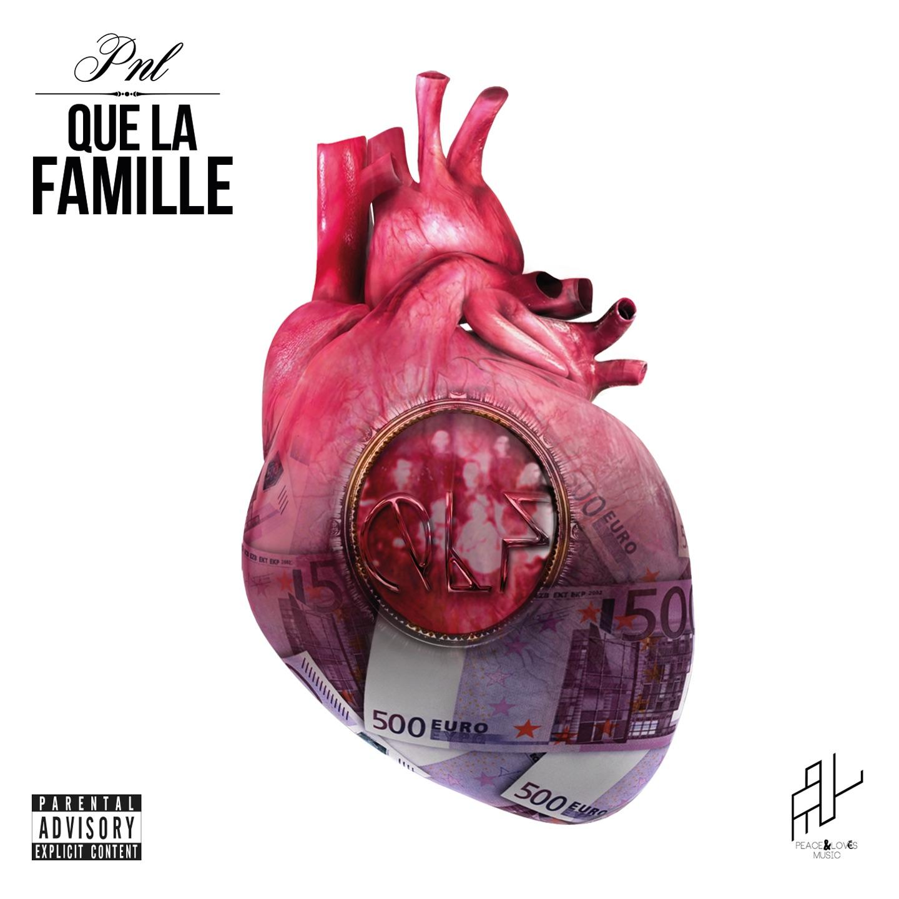
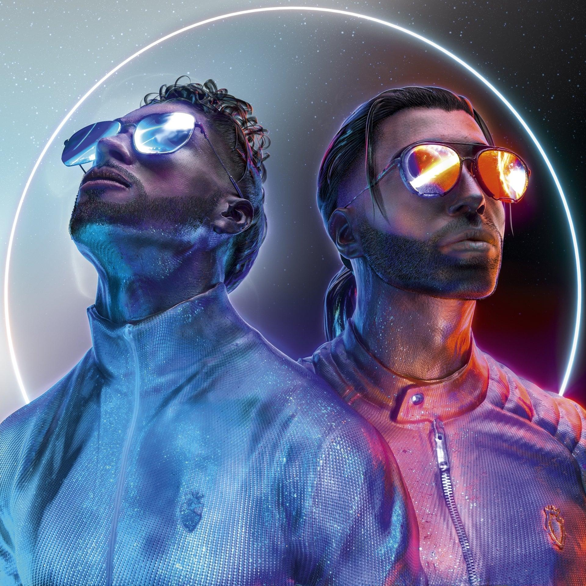

2015 / EP
Que la famille
Les prémices d'un univers singulier, entre ambition, solitude et fraternité.

2015 / ALBUM
Le Monde Chico
L'ambition de conquérir le monde. Le projet qui révèle PNL au grand public.

2016 / ALBUM
Dans la légende
La consécration d'un duo indépendant, entre mélancolie et réussite.

2019 / ALBUM
Deux Frères
Un voyage intime au sommet de leur art, profondément marqué par leurs liens fraternels.